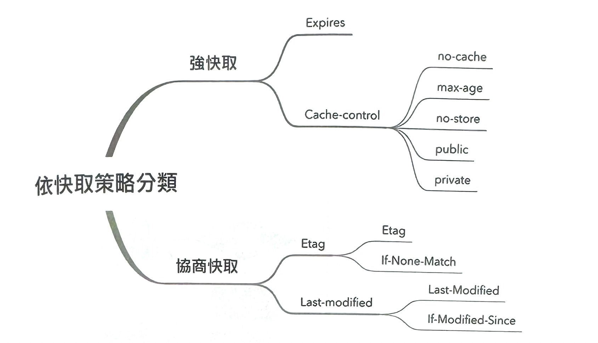
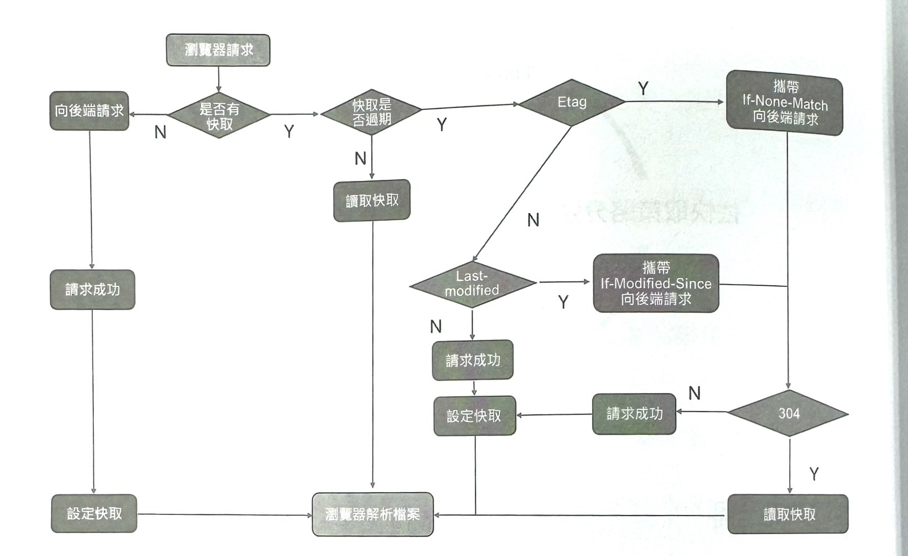
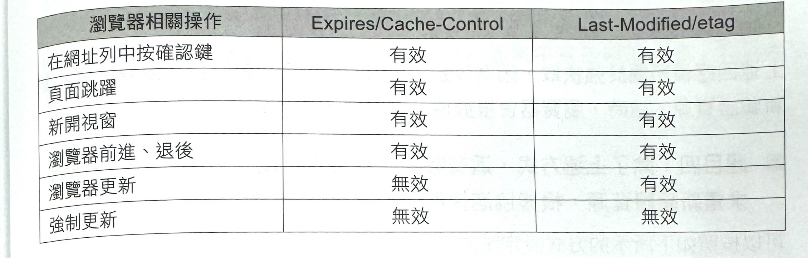

1-4-4 快取政策
快取概念與分類
快取是一個很寬泛的概念,尤其 Web 快取,可分為很多種,如資料庫快取、伺服器快取 CDN 快取、HTTP 快取。甚至一個函數的執行結果都可以被快取。以下先著重分析 HTTP 快取。
根據官方概念可知,HTTP快取是用於臨時儲存(快取)Web文件(如 HTML 頁面和影像),以減少伺服器延遲的一種資訊技術，HTTP 系統將透過該系統的文件的備份儲存下來,如果請求滿足某些件,則可以由快取內容 來傳回請求結果。HTTP 快取系統既可以指裝置,也可以指電腦程式。
《HTTP權威指南》一書中這樣介紹快取:在前端開發中,效能一直是被大家所重視的一點,然而判斷一個網站效能如何的最直觀的方法就是看網頁開啟速度。其中加強網頁開啟速度的方式就使用快取。一個優秀的快取政策可以縮短網頁請求資源的距離,減少延遲,並且由於快取檔案可以重複利用,因此可以減少網路開銷,降低網路負荷。那麼下面來看伺服器快取的原理。
目前，網路應用中很少有不線快取的案例。快取之所以那麼重要,是因為好處很多。例如下面幾點。
- 使網頁載入和呈現速度更快。
- 由於減少了不必要的資料傳輸,因而可以節省網路流量和頻寬。
- 在上一步的基礎上,可以減少伺服器的負擔。
對瀏覽器快取進行分類的方式有很多,按快取位置分類可以分為記憶體快取(memory cache)、硬碟快取(disk cache)、service worker等。
瀏覽器的資源快取可以分為硬碟快取和記憶體快取兩種。當第一次存取網頁時,資源檔被快取在記憶體中,同時也在本機磁碟中保留一份備份。當使用者更新頁面時,如果快取的資源沒有過期,就可以直接從記憶體中讀取資 並載入。當使用者關閉面後,目前頁面快取在記憶體中的資源就會被清空。
當使用者再一次存取頁面時,如果資源檔的快取沒有過期,就可以從本機磁碟載入資料並再次快取到記憶體中。如果按快取策略分類,瀏覽器的資源快取可以分為強快取、協商快取，如圖1所示。
圖1
流程圖
為了使快取策略更加可靠、靈活，HTTP 1.0版本和HTTP1.1 版本的快取策略一直是在漸進增強的。這也表示,程式中可以同時使用 HTTP1.0 版本和 HTTP1.1 版本中關於快取的特性,也可以同時使用強制快取和協商快取。當然·它們在混合使用時會有不同的優先順序,對此,透過圖2 所示的流程圖來做一個歸納。
根據這個流程,強制快取的優先順序最高,並且在快取有效期內瀏覽器不會因為資源的改動而發送請求,因此強制快取的使用適用於大型且不易修改的資源檔,舉例來說,協力廠商的 CSS、JS 檔案或圖片資源。如果想加強快的靈活性,也可以為檔案名稱加上 hash 標識進行版本的區分。
快取靈活性高,適用於資料的快取,根據上述介紹,採用 etag 標識比對檔案內容是否發生變化的靈活度最高,也最為可靠。對於資料的快取,可以重點考慮將資料快取在記憶體中,因為記憶體載入速度最快,並且資料體積小。
圖2
快取和瀏覽器操作
快取中的重要一環是瀏覽器,常見的瀏覽器行為對應快取行為如下，注意,不同種類及版本的瀏覽器引擎可能會有差別。
- 當使用者使用 Ctrl+F 快速鍵強制更新網頁時,瀏覽器會直接從伺服器載入網頁資訊,跳過強快取和協商快取。
- 當使用者僅使用 F5 快速鍵更新網頁時,瀏覽器的載入過程會跳過強快取，但仍然會進行協商快取。
以下用 Alloy Team 製作的一個圖進行歸納,將幾種典型的更新操作對應的快取行為轉為表格,如圖3 所示。
圖3
快取相關面試題目
- 題目一:如何禁止瀏覽器不快取靜態資源
實際工作中,很多場景都需要禁用瀏覽器快取。舉例來說,可以使用 Chrome 隱私模式,在程式層面設定相關請求標頭,設定如下。
// Cache-Control: no-cache, no-store, must-revalidate
此外,也可以給請求的資源增加一個版本編號,如下所式。
< rel="stylesheet" type="text/css" href="./asset.css?version=1.8.9" />
<meta http-equiv="Cache-Control" content-"no-cache, no-store,must-revalidate"/>
還可以使用 meta 來宣告快取規則,宣告如下。
- 題目二:設定以下請求/回應標頭會有什麼效果?
回應標頭屬於強快取,因為 max-age 設定為 0 ,所以瀏覽器必須發送請求重新驗證資源。這時,瀏覽器會根據協商快取機制進行快取,並可能傳回 200 或 304。
- 題目三:設定以下 request/response header 會有什麼效果？
// cache-control: no-cache
上述回應標頭屬於強快取,因為設定了 no-cache,所以瀏覽器必須發送請求重新驗證資源。這時,瀏覽器會根據協商快取機制進行快取。
- 題目四:除了上述方式,還有哪種設定方式可使瀏覽器必須發送請求重新驗證資源,根據協商取機制進行快取?
可以按照如下所示的方式設定請求/回應標頭。
// cache-control: must-revalidate
題目五:設定以下請求/回應標頭會有什麼效果?
// Cache-Control: max-age=60, must-revalidate
如果資源在 60s 內再次被存取,那麼根據強快取機制可以直接傳回快取資料;如果超過 60s 必送網路請求到伺服器端,以驗證資源有效性。
- 題目六:據你的經驗,為什麼大廠都不怎麼用 etag
廠多使用負載平衡的方式來排程 HTTP 請求。因此,同一個用户頁面的多次請求很可能被分配到不的伺服器來回應,而根據 etag 計算原理,不同的伺服器有可能在資源內容沒有變化的情況下,計算出不一樣的 etag,而使快取故障。
快取實戰
啟動項目
首先建立專案,程式如下。
mkdir cache
npm init
透過以上程式獲得 package.json 檔案,同時在檔案中宣告相關依賴,程式如下。
{
"name": "cache",
"version" : "1.0.0",
"description": "Cache demo",
"main": "index.js",
"scripts": {
"start": "nodemon ./index.js"
},
"keywords" : [
"cache",
"node"
],
"devDependencies": {
"@babel/core": "latest",
"@babel/preset-env": "latest",
"@babel/register": "latest",
"koa": "latest",
"koa-conditional-get" : "^2.0.0",
"koa-etag": "^3.0.0",
"koa-static": "latest"
},
"dependencies" : {
"nodemon": "latest"
},
"license": "ISC"
}
使用 nodemon 啟動項目,同時編輯 .babelrc 檔案中內容,設定 babel 如下。
{
"presets": [
[
"@babel/preset-env",
{
"targets"; {
"node"; "current"
}
}
]
]
}
在 cache/static 目錄下,建立 index.html 和一張測試圖片 web.png。
<!DOCTYPE html>
<html lang="en">
<head>
<meta charset="UTF-8" />
<meta name="viewport" content="width=device-width, initial-scale=1.0" />
<meta http-equiv="X-UA-Compatible" content="ie=edge" />
<title>前端開發核心知識進階</title>
<style>
.cache img {
display: block;
width: 100%;
}
</style>
</head>
<body>
<div class="cache">
<img src="./web.png" />
</div>
</body>
</html>
看一下核心指令檔 index.js, 其中的程式其實就是一個簡單的 Node.js 服務。
require('@babel/register');
require('./cache.js');
cache. js :
import Koa from 'koa'
import path from 'path'
import resource from 'koa-static'
const app = new Koa()
const host = 'localhost'
const port = 6666
app.use (resource(path.join(__dirname, './static')))
app.listen(port, () => {
console.log(`server is listen in ${host}:${port}`)
})
執行 npm run star,可以獲得如 圖4 所示的畫面。
圖4

應用快取
下面來嘗試加入一些快取。首先根據強快取機制,在回應標頭上加入相關欄位,如下所示。
import Koa from 'koa'
import path from 'path'
import resource from 'koa-static'
const app = new Koa()
const host = 'localhost'
const port = 5999
app.use(async (ctx, next) => {
ctx.set ({
'Cache-Control'; 'max-age=5000'
})
await next()
})
app.use(resource(path.join(__dirname, './static')))
app.listen(port, () => {
console.log(`server is listen in ${host}:${port}`);
})
加入Cache-Control 標頭並將 max-age 值設定為 5000 後,頁面獲得的回應如圖5 所示。
圖5

再次更新頁面,獲得了200 OK(from memory cache)的標記,如圖6 所示。
圖6

當關掉瀏覽器,再次開啟頁面後,又會獲得200 0K(from disk cache) 的標記，如圖7 所示。記憶體快取已經隨著 關閉瀏覽器而清除,這裡顯示的內容是從硬碟中取到的快取。
圖7

嘗試將 max-age 的值改為5s, 5s 後再次更新頁面,發現快取已經故障。
下面來試驗一下協商快取。初始 package.json 檔案中已經引用了 koa-etag 和 koa-conditional-get 這兩個套件依賴。
將 cache.js 檔案中的內容改為如下所示的樣子。
import Koa from 'koa'
import path from 'path'
import resource from 'koa-static'
import conditional from 'koa-conditional-get'
import etag from 'koa-etag'
const app = new Koa()
const host = 'localhost'
const port = 5999
app.use(conditional())
app.use(etag())
app.use(resource(path.join(__dirname, './static')))
app.listen(port, () => {
console.log(`server is listen in ${host}:${port}`)
})
快取設定很簡單,在偵錯欄中,看到了協商快取的請求標頭,如圖8 所示。
再次更新瀏覽器,這次在請求標頭中發現了 If-None-Match,內容與上一次的回應標頭中的相同,如圖9 所示。
圖9
因為圖片並沒有生變化,所以獲得 304 回應標頭,如圖10
圖10
這裡主要使用了 Koa 函數庫,如果使用原生的 Node.js,可以參考下面的程式,該段程式主要實現了 if-modified-since/last-modified 標頭。
http.createServer((req, res) => {
let { pathname } = url.parse(req.url, true)
let absolutePath = path.join(__dirname, pathname)
fs.stat(path. join(__dirname, pathname), (err, stat) => {
//路徑不存在
if(err) {
res.statusCode = 404
res.end('Not Fount')
return
}
if(stat.isFile()){
res.setHeader('Last-Modified', stat.ctime.toGMTString())
if(req.headers['if-modified-since'] === stat.ctime.toMTString()){
res.statusCode = 304
res.end()
return
}
fs.createReadStream(absolutePath).pipe(res)
}
})
})
原始程式深入
上面應用 etag 使用了 koa-etag 套件,現在就來了解一下套件的實現,原始程式如下。
var calculate = require('etag');
var Stream = require('stream');
var fs = require('mz/fs');
module.exports = etag;
function etag (options) {
return function etag(ctx, next) {
return next()
.then(() => getResponseEntity(ctx))
.then(entity => setEtag(ctx, entity, options)) ;
}
}
function getResponseEntity (ctx, options) {
// no body
var body = ctx.body;
if (!body || ctx.response.get('ETag')) return;
// type
var status = ctx.status / 100 | 0;
// 2xx
if (2 != status) return;
if (body instanceof Stream) {
if (!body.path) return;
return fs.stat(body. path) catch(noop) ;
} else if (('string' === typeof body) || Buffer.isBuffer(body)) {
return body;
} else {
return JSON.stringify(body) ;
}
}
function setEtag(ctx,entity, options){
if (!entity) return;
ctx.response.etag = calculate (entity, options) ;
}
function noop () {}
整個 etag 套件就是一個中介軟體，它首先呼叫 getResponseEntity 方法取得回應體，然後根據 body 呼叫了 setEtag 方法，根據回應內容產生了一個 etag 結果。最後在產生 etag 結果的計算過程中又利用了 etag 這個套件。
下面就來看一下 etag 套件。
etag
/*!
* etag
* Copyright(c) 2014-2016 Douglas Christopher Wilson
* MIT Licensed
*/
'use strict'
/**
* Module exports.
* @public
*/
module.exports = etag
/**
* Module dependencies.
* @private
*/
var crypto = require('crypto')
var Stats = require('fs').Stats
/**
* Module variables.
* @private
*/
var toString = Object.prototype.toString
/**
* Generate an entity tag.
*
* @param {Buffer|string} entity
* @return {string}
* @private
*/
function entitytag (entity) {
if (entity.length === 0) {
// fast-path empty
return '"0-2jmj7l5rSw0yVb/vlWAYkK/YBwk"'
}
// compute hash of entity
var hash = crypto
.createHash('sha1')
.update(entity, 'utf8')
.digest('base64')
.substring(0, 27)
// compute length of entity
var len = typeof entity === 'string'
? Buffer.byteLength(entity, 'utf8')
: entity.length
return '"' + len.toString(16) + '-' + hash + '"'
}
/**
* Create a simple ETag.
*
* @param {string|Buffer|Stats} entity
* @param {object} [options]
* @param {boolean} [options.weak]
* @return {String}
* @public
*/
function etag (entity, options) {
if (entity == null) {
throw new TypeError('argument entity is required')
}
// support fs.Stats object
var isStats = isstats(entity)
var weak = options && typeof options.weak === 'boolean'
? options.weak
: isStats
// validate argument
if (!isStats && typeof entity !== 'string' && !Buffer.isBuffer(entity)) {
throw new TypeError('argument entity must be string, Buffer, or fs.Stats')
}
// generate entity tag
var tag = isStats
? stattag(entity)
: entitytag(entity)
return weak
? 'W/' + tag
: tag
}
/**
* Determine if object is a Stats object.
*
* @param {object} obj
* @return {boolean}
* @api private
*/
function isstats (obj) {
// genuine fs.Stats
if (typeof Stats === 'function' && obj instanceof Stats) {
return true
}
// quack quack
return obj && typeof obj === 'object' &&
'ctime' in obj && toString.call(obj.ctime) === '[object Date]' &&
'mtime' in obj && toString.call(obj.mtime) === '[object Date]' &&
'ino' in obj && typeof obj.ino === 'number' &&
'size' in obj && typeof obj.size === 'number'
}
/**
* Generate a tag for a stat.
*
* @param {object} stat
* @return {string}
* @private
*/
function stattag (stat) {
var mtime = stat.mtime.getTime().toString(16)
var size = stat.size.toString(16)
return '"' + size + '-' + mtime + '"'
}
etag 套件中的 etag 方法接收一個 entity 作為第一個參數， entity 可以是 string 類型、 buffer 類型，也可以是 stats 類型。如果是 stats 類型，那麽 etag 的產生 方法會與另外兩種類型的產生方法有所不同，程式如下。
var mtime = stat.mtime.getTime().toString(16)
var size = stat.size.toString(16)
return '"' + size + '-' + mtime + '"'
以上程式主要根據 stats 類型的 entity 的 mtime 和 size 特徵來拼成一個 etag 產生方法。
對於正常的 string 類型和 buffer 類型，etag 產生方法依賴了內建的 crypto 套件，主要根據 entity 產生 hash，而 hash 的產生主要依賴了 sha1 加密方法，如下所示。
var hash = crypto
.createHash('sha1')
.update(entity, 'utf8')
.digest('base64')
了解了這些，如果面試官再問「etag 的產生方法」的相關問題，就能夠有一定底氣來回答了。
實現一個驗證快取的輪子
分析完 etag 這個套件，嘗試自己造一個輪子，即自己開發一個套件。
這個輪子需要實現驗證快取是否可用的功能，它接收請求標頭和回應標頭，並根據這兩個頭部傳回一個布林值，表示快取是否可用。預計這個套件的使用方式如下。
var reqHeaders = {'if-none-match':'"foo"'}
var resHeaders = { 'etag':'"bar"'}
isFresh(reqHeaders, resHeaders)
// => false
var reqHeaders = { 'if-none-match': '"foo"' }
var resHeaders = { 'etag': '"foo"' }
isFresh (reqHeaders, resHeaders)
// => true
在業務端，可以直接透過以下程式使用該套件。
var isFresh = require ('is-fresh')
var http = require ('http')
var server = http.createServer(function (reg, res) {
if(isFresh(reg.headers,{
'etag':res.getHeader('ETag'),
'last-modified': res.getHeader('Last-Modified')
})){
res.statusCode = 304
res.end()
return
}
res.statusCode = 200
res.end('hello, world!')
})
server.listen(3000)
實現該函數庫的前提是先了解快取的基礎，知曉快取的優先順序。應該先驗證 cache-control，然後驗證 if-none-match，最後驗證 if-modified-since。 了解了這些，實現起來就不難了，程式如下所示。
var CACHE_CONTROL_NO_CACHE_REGEXP = /(?:^|,)\s*?no-cache\s*?(?:,|$)/
function fresh(reqHeaders, resHeaders){
// fields
var modifiedSince = reqHeaders['if-modified-since']
var noneMatch = reqHeaders['if-none-match']
if (!modifiedSince && !noneMatch) {
return false
}
var cacheControl = reqHeaders['cache-control']
if (cacheControl && CACHE_CONTROL_NO_CACHE_REGEXP.test(cacheControl)){
return false
}
// if-none-match
if (noneMatch && noneMatch !== '*') {
var etag = resHeaders['etag']
if (!etag) {
return false
}
var etagStale = true
var matches = parseTokenList(noneMatch)
for (var i = 0; i < matches.length; it+) {
var match = matches[i]
if (match === etag || match === 'W/' + etag || 'W/' + match === etag) {
etagStale = false
break
}
}
if (etagStale) {
return false
}
}
// if-modified-since
if (modifiedSince) {
var lastModified = resHeaders['last-modified']
var modifiedStale = !lastModified || ! (parseHttpDate (lastModified) <= parseHttpDate(modifiedSince))
if (modifiedStale) {
return false
}
}
return true
}
function parseHttpDate (date) {
var timestamp = date && Date.parse(date)
return typeof timestamp === 'number' ? timestamp : NaN
}
function parseTokenList (str) {
var end = 0
var list = []
var start = 0
for (var i = 0, len = str.length; i < len; i++) {
switch (str. charCodeAt (i)) {
case 0x20: /* */
if (start === end) {
start = end = i + 1
}
break
case 0x2c: /* , */
list.push(str.substring(start, end))
start = end = i + 1
break
default;
end = i + 1
break
}
}
list.push(str. substring (start, end))
return list
}